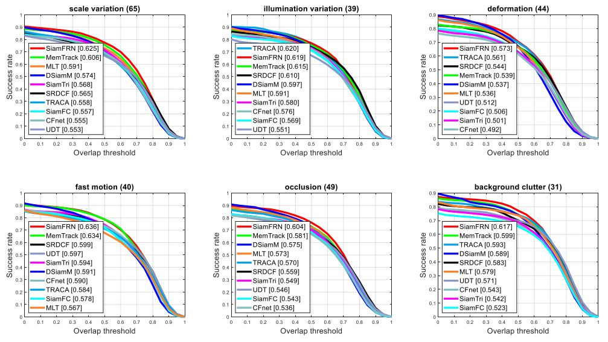

Md. Maklachur Rahman

Researcher
Virtual Reality Lab
School of Computer Science and Engineering
Kyungpook National University
Email: maklachur [at] gmail [dot] com OR maklachur [at] knu [dot] ac [dot] kr
CV/Google Scholar/Github
I am Md. Maklachur Rahman, working as a Researcher at Virtual Reality Lab at the School of Computer Science and Engineering, Kyungpook National University, South Korea. Before joining as a Researcher, I completed my Master's degree under this laboratory as a Research Assistant. Formerly, I worked as a Software Engineer at Samsung R&D Institute Bangladesh for about three years. However, I have completed undergraduate studies at the Department of Computer Science and Engineering at Chittagong University of Engineering & Technology (CUET). I always enthrall by the fundamentals of computer science and interest to use deep learning frameworks for solving beyond computer vision problems to improve the quality of life. Now, my research focuses on solving visual object tracking problems using deep learning algorithms.
Education
- M.S., School of Computer Science and Engineering, Kyungpook National University (September 2018 - August 2020)
- B.S., Department of Computer Science and Engineering, Chittagong University of Engineering & Technology (March 2009 - September 2013)
Research Experience
- Researcher, Virtual Reality Laboratory (September 2020 - Present)
- Research Assistant, Virtual Reality Laboratory (August 2018 - August 2020)
Work Experience
- Software Engineer, Samsung R&D Institute Bangladesh (October 2013 - July 2016)
- Industrial Attachment Training, Sentinel Solutions Ltd. Dhaka, Bangladesh (November 2012 - December 2012)
Publications
|  |
|

|
|
|
|
|

|
|

|
|

|
|

|
|
Projects
- Deep learning technique for skin lesion segmentation
- SWC/DMC Project Test Suite and IoT Test FW Development
- Tizen IDE Verification and Automation
- Location Based Reminder System Using GPS
- Chess Game Design using Artificial Intelligence
- Mobile Phone Booth Customer Care Management Simulator
- Bank Management System Analysis and Design of Sonali Bank Ltd. CUET Branch (Account Section)
- Online Based Digital Hall Management System
Research Interests
- Deep Learning
- Computer Vision
- Visual Object Tracking
- Autonomus Vehicle
Awards and Scholarships
- CSE THESIS AWARD-2020, [Master's Thesis], Kyungpook National University, South Korea [Prize Money: 750000 KRW]
- Best Student Paper Award, 26th IW-FCV2020, Japan
- Brain Korea (BK) 21 PLUS Scholarship, Duration: Sept. 2018 – Present, South Korea
- KNU International Graduate Scholarship (KINGS) [Full], Duration: Sept. 2018 – Present, South Korea
- University Merit Scholarship, Duration: Mar. 2009 - Sept. 2013, CUET, Bangladesh